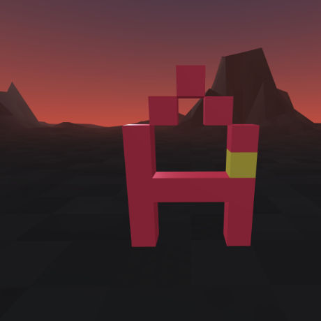
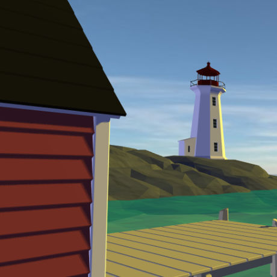
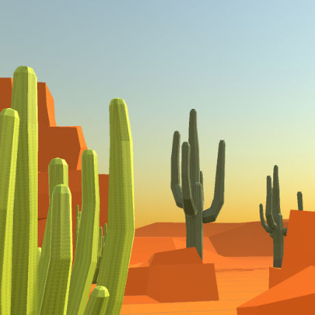
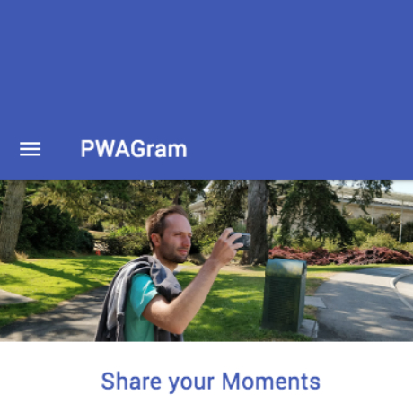
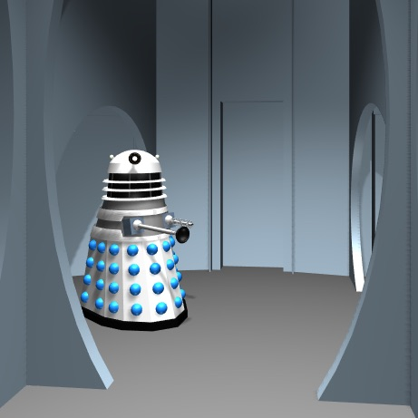

Experiments Ahead
Experiments and general mucking about page to explore new Web technologies and approaches to process/production. Which basically means that the experience will vary (even break) depending on the browser/device being used and how quickly new specifications are adopted.
The purpose is to learn and to share. So with that in mind - Welcome to our lab! Have fun and please share any thoughts, suggestions or questions with us.
About The Page Header
An A-Frame scene depicting the central hub or entrance hall in the Skaro Dalek City created for the 1963 Doctor Who story "The Daleks". Here we're using an iFrame to investigate the potiential of embedding XR experiences in a webpage.
Instructions:
Browser: Click on the button to begin the experience and then click on the scene presented. Navigate using the WASD keys and mouse. Press the Esc key to release the cursor.
Smartphone VR viewer: Click on the symbol in the lower right to enter true VR mode. If your viewer has a interaction button implemented, use it to move about the scene.
Tracked headset: Use the built in browser to navigate to this page. Click the symbol in the lower right and move around the scene. Tracked controllers are not implement as of yet.
Vr
Vr
VR Tracked Controllers
A-Frame example. Using any headset that has tracked controllers, grab and move the cubes making up the A.
Vr
Vr
VR Maritime Experience
A-frame environment targetting Cardboard VR using geometry imported in the GLTF format, imported A-Frame components, sound and hotspot navigation.
Rough but informative
Ar
Ar
AR Poster Test
The Icon is incorrect. Three.js AR component to look into creating an interactive poster. This requires the "hiro" marker to work. Very rough 'coder' art to explore the basic concept. Next experiment is setting this up in A-Frame AR.
Pwa
Pwa
PWA Test
First lesson in creating a PWA. Alternative to creating a native app for android or iOS which many clients are moving towards. Easier and cheaper to maintain and the future indicates that accessing key platform features is on the horizon.
Vr
Vr
VR Dalek City
Building a interior of the Dalek City from the Doctor Who story "The Daleks" from 1963.